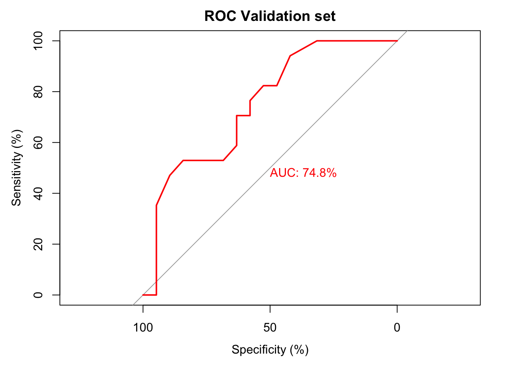
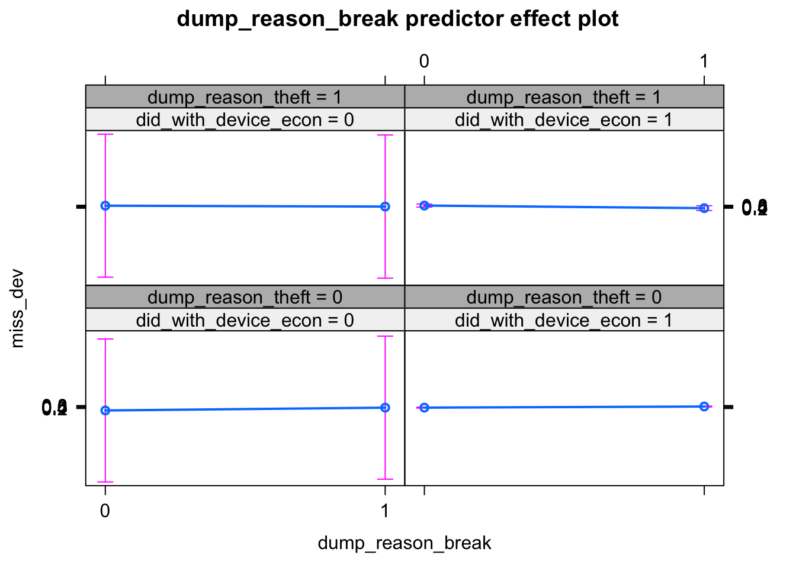
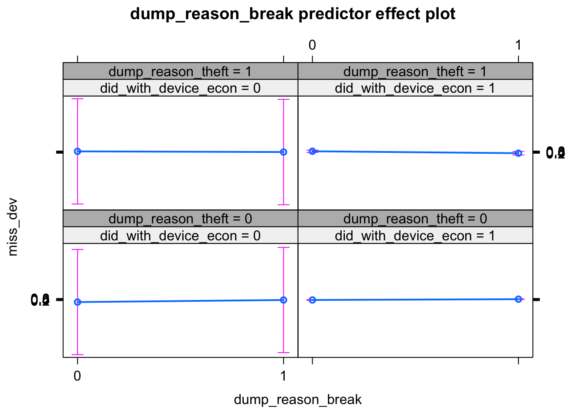
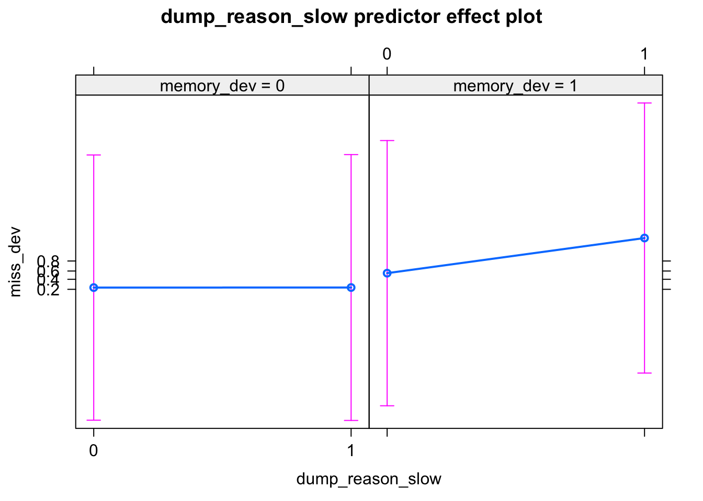
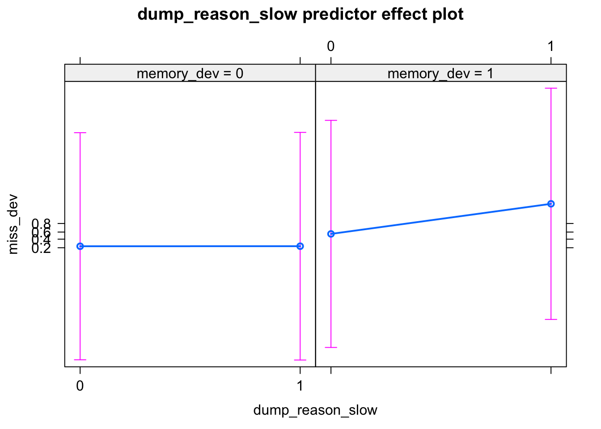

Chapter 2 Can We Dig Further??
We have introduced All Pairwise Interactions Here from the best fitted model of Chapter 1. Lets see how many survives upon the finishing of Backward Stepwise Regression Model
suppressWarnings( backward.model <- step(full.model,direction = "backward",trace = 0))
backward.model %>% summary()##
## Call:
## glm(formula = miss_dev ~ dump_within + did_with_device_econ +
## memory_dev + dump_reason_break + dump_reason_theft + dump_reason_slow +
## dump_within:did_with_device_econ + did_with_device_econ:dump_reason_break +
## did_with_device_econ:dump_reason_theft + memory_dev:dump_reason_slow +
## dump_reason_break:dump_reason_theft, family = binomial, data = df)
##
## Deviance Residuals:
## Min 1Q Median 3Q Max
## -2.7734 -0.9236 -0.2387 0.8752 2.3921
##
## Coefficients:
## Estimate Std. Error z value Pr(>|z|)
## (Intercept) -5.93029 144.96528 -0.041 0.967369
## dump_within1 -1.12301 0.61015 -1.841 0.065687
## dump_within2 -0.05492 0.31648 -0.174 0.862238
## dump_within3 -0.80549 0.25775 -3.125 0.001778
## dump_within4 -0.52595 0.23603 -2.228 0.025861
## dump_within5 -2.86470 144.96356 -0.020 0.984234
## did_with_device_econ1 4.76928 144.96535 0.033 0.973755
## memory_dev1 1.41187 0.26887 5.251 1.51e-07
## dump_reason_break1 2.67847 0.88178 3.038 0.002385
## dump_reason_theft1 4.25635 1.21115 3.514 0.000441
## dump_reason_slow1 0.00594 0.52889 0.011 0.991039
## dump_within1:did_with_device_econ1 0.83392 0.69316 1.203 0.228953
## dump_within2:did_with_device_econ1 -0.20704 0.34786 -0.595 0.551719
## dump_within3:did_with_device_econ1 0.66524 0.27185 2.447 0.014401
## dump_within4:did_with_device_econ1 0.47258 0.24810 1.905 0.056815
## dump_within5:did_with_device_econ1 3.06522 144.96360 0.021 0.983130
## did_with_device_econ1:dump_reason_break1 -1.61778 0.92249 -1.754 0.079481
## did_with_device_econ1:dump_reason_theft1 -2.57704 1.43737 -1.793 0.072991
## memory_dev1:dump_reason_slow1 3.43606 1.41273 2.432 0.015007
## dump_reason_break1:dump_reason_theft1 -3.53091 1.42828 -2.472 0.013431
##
## (Intercept)
## dump_within1 .
## dump_within2
## dump_within3 **
## dump_within4 *
## dump_within5
## did_with_device_econ1
## memory_dev1 ***
## dump_reason_break1 **
## dump_reason_theft1 ***
## dump_reason_slow1
## dump_within1:did_with_device_econ1
## dump_within2:did_with_device_econ1
## dump_within3:did_with_device_econ1 *
## dump_within4:did_with_device_econ1 .
## dump_within5:did_with_device_econ1
## did_with_device_econ1:dump_reason_break1 .
## did_with_device_econ1:dump_reason_theft1 .
## memory_dev1:dump_reason_slow1 *
## dump_reason_break1:dump_reason_theft1 *
## ---
## Signif. codes: 0 '***' 0.001 '**' 0.01 '*' 0.05 '.' 0.1 ' ' 1
##
## (Dispersion parameter for binomial family taken to be 1)
##
## Null deviance: 485.33 on 350 degrees of freedom
## Residual deviance: 379.93 on 331 degrees of freedom
## AIC: 419.93
##
## Number of Fisher Scoring iterations: 14The AIC Value was Initially 477.
After Stepwise Regression, it came down to 437
After Adding the Interaction elements, it is now 419.9321948
The 10 fold cross validation accuracy is below:
suppressWarnings( cross_validated_model <- boot::cv.glm(df,glmfit = backward.model,K = 10))
print((1-cross_validated_model$delta[1])*100)## [1] 79.26298Lets also look at the ROC curve for the the fitted logistic regression model: (A better fit than model without interaction)
null.model <- glm(miss_dev~1,family = binomial(),data = df)
suppressWarnings( Generate_RoC(full_model = full.model,null_model = null.model,df = df,direction = "B",outcome = "miss_dev"))## [1] 351 With a good fit in the model, lets diagnosis our model parameters for multicolineariy. If the VIF (Variance Inflation Factor) is \(>10\) for any predictor, we might be in trouble.
## MIN IVF: 1## MAX IVF: 7706858769## MEAN IVF: 457406685Lets look at the effects plot to better understand the individual effects of each predictor:
for (n in c(
"dump_within"
,"did_with_device_econ"
,"memory_dev"
,"dump_reason_break"
,"dump_reason_theft"
,"dump_reason_slow"
# ,"slt_lack_parts"
# ,"slt_lack_repairer"
# ,"rprd_usage_chlng_fault"
# ,"rpr_missing_trait_trust"
# ,"rpr_missing_trait_gender"
# ,"dev_tknto_rec_Y"
# ,"dev_rec_chlng_hard_find"
)){
#print(n)
print(plot(effects::predictorEffect(n,backward.model)))
}

 
 
Adding Interaction introduces Multicolinearity among variables and makes the model unstable. We should not do that for this model. Lets go to chapter 3????

Adding Interaction introduces Multicolinearity among variables and makes the model unstable. We should not do that for this model. Lets go to chapter 3????